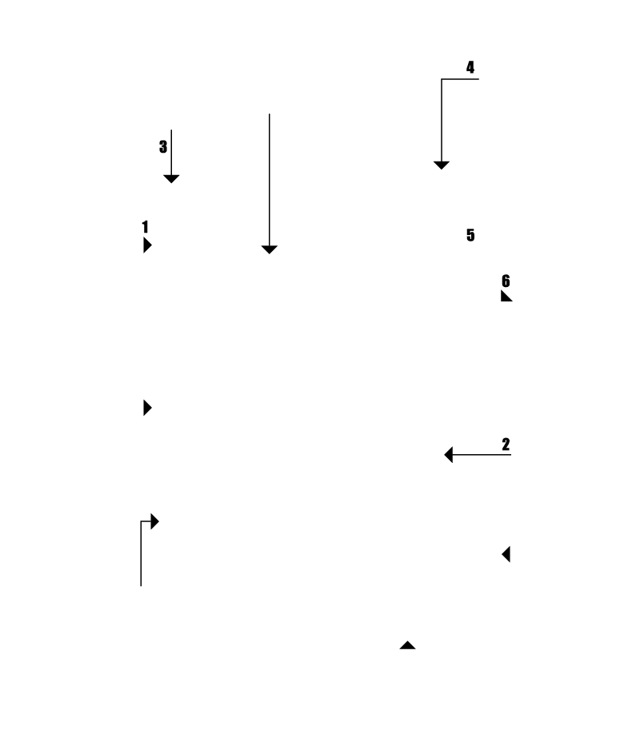
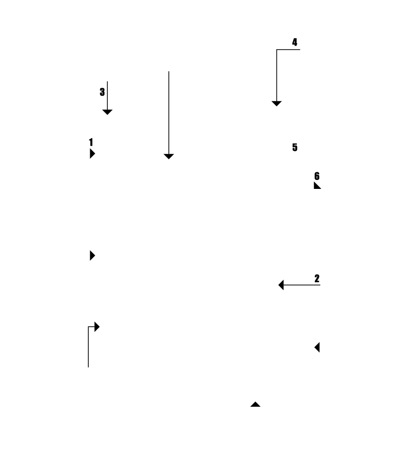

Anclaprac: Galvanized sheet that is anchored to the wall using 2 wall anchors and bolts.
Viseprac: Cross-shaped spacer that is installed each intersection of glass block in order to form the division to receive the mortar.
Expaprac: Expansion strip to cushion the tensile strenghts in the glass block panels, caused by the expansion movements of the constructions.
Alamprac: Galvanized wire that gives structure to the glass block panel. It is installed at least, each two vertical rows of the panel.
Unionprac: Copper joint to shore up the ends of Soporprac and Anclaprac, and to reach from end to end of the glass block panel.
Soporprac: Galvanizrd wire ladder that gives support and structure to the glass block panel. It is installed, at least, eacho two horizontal rows of the panel.
Soporprac is shored up to the Anclaprac, achieving an integral structure in the glass block panel.
You must leave a space between the panel and the side walls, and between the panel and the roof. Expaprac is placed in this space and mortar is not used.
The edge of the glass block panel, with the wall and with the ceiling, must be filled with silicone uniformly spreading before it dries.
The first row of glass block is bonded to the floor with mortar.
Between each 2 Viseprac, you must spread mortar to receive the glass block of the next row.
When installing glass blocks, there are two main obstacles to overcome in order to achieve a proper installation.
Panels that are formed with glass blocks are not structural and a wind load or of other kind could affect them.
Due to the expansion movements of constructions and for the very nature of glass, glass block goes through an elastic phase to one of rupture without crossing to an intermediate plastic phase, typical of others construction materials like products of cement, clays or metals.
Creaprac offers you this installation system, Instalprac, in which we show how glass block must be installed, using all the needed materials to:
- Achieve glass block panels with a structure that resists different loads which could act on the panel.
- Achieve glass block panels where tensile strengths can be cushioned in the glass blocks, caused by expansion movements of the construction.